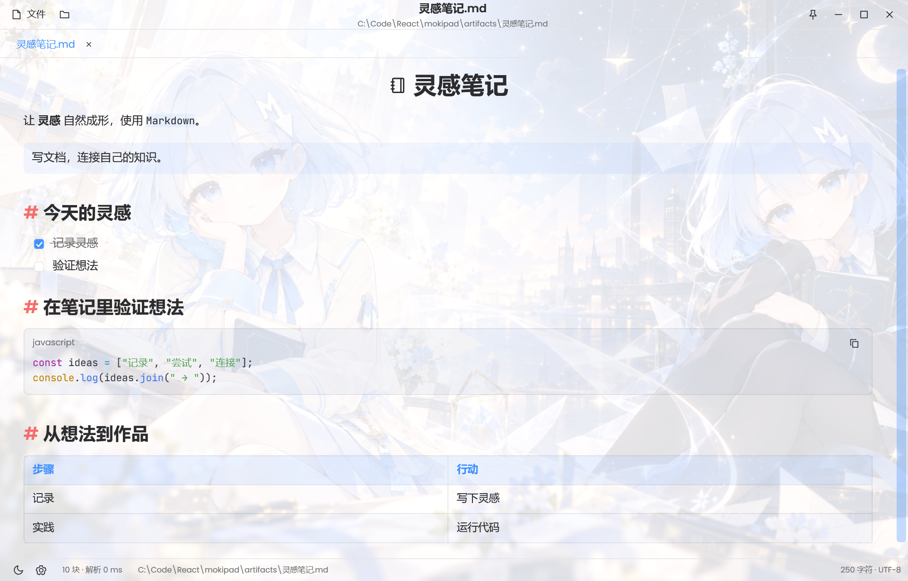
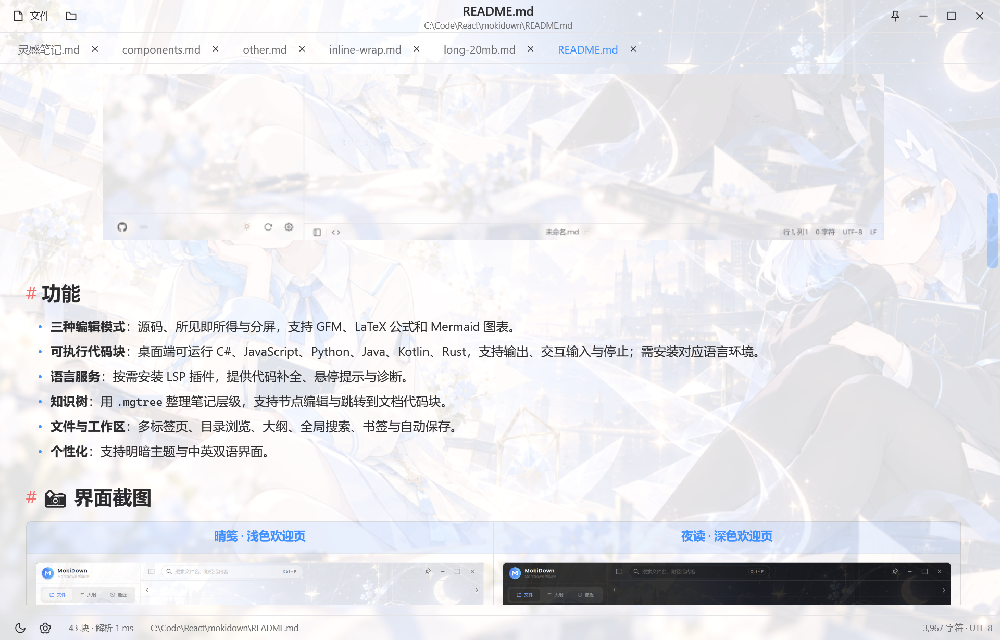

Solution Documentation
专注 Markdown 阅读的原生 Windows 阅读器 · 解决方案说明与代码检查报告
MokiPad 是一个只读的本地 Markdown 阅读器：Windows 原生 WPF，无编辑器、无联网依赖，专注长文阅读。它沿用 MokiDown 的明暗配色、圆角与星光书页背景，支持公式、图片、SVG、GIF、表格、脚注、链接跳转与安全子集 HTML。
结构读取自 MokiPad.sln 与各项目文件；解决方案文件夹 src、tests 仅用于 IDE 分组。
MokiPad.sln ├─ src │ ├─ MokiPad WinExe · net10.0-windows · WPF 启动项目 │ │ ├─ App.xaml / App.xaml.cs │ │ ├─ MainWindow.xaml / MainWindow.xaml.cs │ │ ├─ Controls/ GifAnimation.cs · HtmlBlocks.cs · ImageLoader.cs · MarkdownPreview.cs │ │ ├─ Rendering/ MathView.cs │ │ ├─ Models/ DocumentTab.cs │ │ ├─ Services/ Motion.cs · Preferences.cs · ThemeService.cs · UiText.cs │ │ ├─ Styles/ Controls.xaml │ │ └─ Assets/ app.ico · moki-icon.png · starlight.png │ └─ MokiPad.Core Library · net10.0 │ ├─ MarkdownEngine.cs │ ├─ FileService.cs │ └─ CodeSyntax.cs └─ tests └─ MokiPad.Verification Exe · net10.0-windows · 离屏验证 └─ Program.cs
WPF 窗口、阅读界面、渲染组件、主题与本地偏好。
Markdown 解析（Markdig）、编码识别、原子保存辅助与词法着色。
不打开实体窗口的离屏验证：组件画廊、主题图标、长文虚拟化、编码往返。
| 配置 | 平台 | 用途 | 映射 |
|---|---|---|---|
| Debug | Any CPU | 日常开发、断点调试 | 各项目 Debug · Any CPU · Build |
| Release | Any CPU | 发布、验证（scripts\publish.ps1） | 各项目 Release · Any CPU · Build |
检查由 JetBrains ReSharper 命令行工具 InspectCode 2026.2.3.1 完成，基于 MokiPad.sln 构建后分析全部三个项目。Rider 自带的 inspect.bat 与正在运行的 Rider 实例互斥（一次只能运行一个实例），因此使用同引擎的独立命令行工具。
# 安装并运行（本机）
dotnet tool install --global JetBrains.ReSharper.GlobalTools --version 2026.2.3.1
jb inspectcode MokiPad.sln --output=artifacts\inspectcode.xml --format=Xml --absolute-paths
jb inspectcode MokiPad.sln --output=artifacts\inspectcode.html --format=Html --absolute-paths
问题总数（0 error / 0 warning）
| 批次 | 内容 |
|---|---|
| 警告 | 命名、可空性、异步 lambda、重复基类、未使用成员/using、XAML 设计时绑定 |
| ReSharper Full Cleanup | 统一格式、尾逗号、显式 new()、括号与静态限定符 |
| 语义改写 | 模式匹配、空传播、switch、提前返回、本地函数位置、异步/await using |
| 可见性/不可变 | 收紧 private、init、readonly、主构造函数、集合表达式 |
| Rider 复查 | 修复生成正则导致的 IDE 误报、区域设置、SHA1、异常类型等 15 条问题 |
| 位置 | 处理 |
|---|---|
| App.xaml.cs | 去掉重复基类；async void 改为 async Task + 丢弃调用，异常可观察 |
| MarkdownPreview.cs | 空引用改为模式匹配/条件访问；Application.Current 走显式宿主检查；内联图片加载提取为异步方法 |
| MainWindow.xaml(.cs) | 移除多余 using 与重复基类；XAML 补设计时 DataContext、Grid.Column，删除与样式重复的属性 |
| Core / Verification | 移除未使用的 OutlineEntry、LoadedFile.Bytes；命名空间与数组写法规范化 |
| 命名规则 | 通过 MokiPad.sln.DotSettings 将私有字段约定设为项目现有的 camelCase |
| 目的 | 命令 | 输出 |
|---|---|---|
| 还原 / 构建 | dotnet build MokiPad.sln -c Release | 各项目 bin\Release |
| 运行 | .\scripts\dev.ps1 "C:\Notes\长文.md" | WPF 窗口 |
| 发布 | .\scripts\publish.ps1 | artifacts\app\MokiPad.exe |
| 自包含发布 | .\scripts\publish.ps1 -SelfContained | 携带 .NET 运行时 |
| 离屏验证 | .\scripts\verify.ps1 | artifacts\verification.json + 截图 |
MokiPad.sln。

| 路径 | 说明 |
|---|---|
| artifacts\app\MokiPad.exe | 发布产物（win-x64，ReadyToRun） |
| artifacts\verification.json | 离屏验证指标与通过项 |
| artifacts\inspectcode.html | InspectCode 原生 HTML 报告 |
| artifacts\inspectcode.xml | InspectCode 原始 XML 结果 |
| docs\images\*.png | README 与本文档引用的截图 |
Core 用 Markdig 解析 GFM、数学公式、脚注与原始 HTML，输出与 UI 无关的 PreviewBlock 列表；行偏移、锚点、单元格内联树在解析阶段确定。
预览是一个可回收的 ListBox（VirtualizingStackPanel），每个块由 BlockPresenter 按需创建，20 MiB 文档仅实例化个位数容器。
行内/块级 TeX 由 WpfMath（XAML-Math）排版，MathView 仅负责主题色与尺寸；独占段落的 $$…$$ 自动按块级居中。
统一 ImageLoader：本地/远程/data URI，远程磁盘缓存；SVG 用 SharpVectors 渲染（内嵌 logo 的嵌套 SVG 会被内联）；GIF 流式解码 + 双缓冲合成。
块级解析 p/div/center/h1–h6/li/pre/hr，保留 align 与 width/height；脚本与样式内容丢弃；链接、图片与数学仍走同一内联渲染管线。
主题、语言、背景与字号保存在 %LocalAppData%\MokiPad\preferences.json；窗口关闭时原子写入。